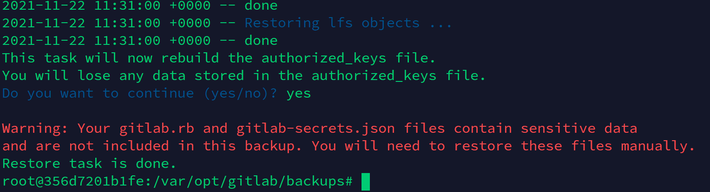

星星睡不着的时候，会不会数人类?
备份
执行命令备份：gitlab-rake gitlab:backup:create
1 | 使用以上命令会在 /var/opt/gitlab/backups 目录下创建一个名称类似为 1530156812_2018_06_28_10.8.4_gitlab_backup.tar 命名格式的压缩包（默认配置情况下） |
查看Gitlab版本
查看生成的备份文件名，或者备份文件中的 backup_information.yml 文件可查看目标版本
目标使用Gitlab版本为 13.9.1
Docker Pull相应版本的Gitlab
使用docker搭建gitlab来还原数据，方便快捷
docker pull gitlab/gitlab-ce:13.9.1-ce.0
这里下载ce版本的gitlab，之前下载了个ee版本的，还原提示版本不兼容…md
下载完成后查看我们的docker镜像
docker images
运行Docker
docker run -d -p 8080:80 gitlab/gitlab-ee:13.9.1-ce.0
-d 后台运行
-p 将docker容器的80端口，映射到物理机的8080端口
访问8080端口，已经run起来了
将拖回来的备份文件拷贝到Docker容器里
docker ps 查找容器id
docker inspect -f '{{.ID}}' 容器id 查找容器长id（或者启动容器的时候使用-d参数，返回的就是这串长id）
拷贝本地文件到docker容器
docker cp 本地路径 容器长ID:容器内路径
例：
1 | docker cp /home/ubuntu/testaaa.tar 356d7201b1fe6f267396958a9c8d3b14bd8a25701efd05efcbc69ee20e37e8b6:/var/opt/gitlab/backups/ |
进入容器终端查看
docker exec -it 容器短id /bin/bash
文件已经上传到docker容器内

名字修改为标准格式命名
Gitlab恢复
停止相关数据连接服务
1 | gitlab-ctl stop unicorn |
恢复备份，指定要恢复备份文件的时间戳
1 | # 比如备份文件是1625016396_2021_06_30_12.0.2_gitlab_backup.tar，那么需要执行下面命令 |
执行，输入yes

显示 gitlab.rb 和 gitlab-secrets.json 文件需要手动恢复，还原任务完成
（有些 gitlab 还原后没有这两个文件会一直显示500，文件在 /etc/gitlab/ 目录下）

进入 gitlab-rails console
重置root密码，最少需要八位字符
User.where(username: 'root').first.update! password: '12345678'
然后就可以使用root账号登录进去了